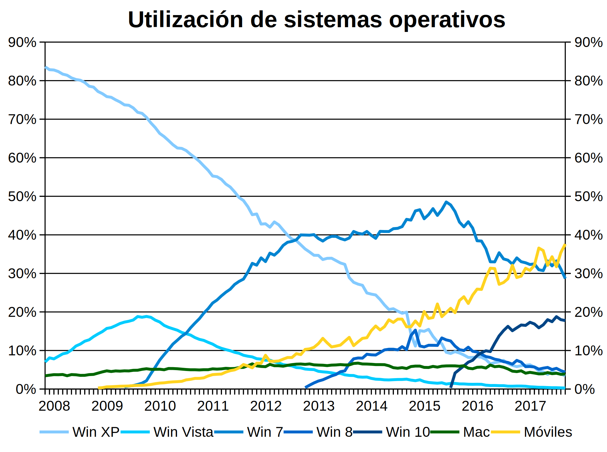
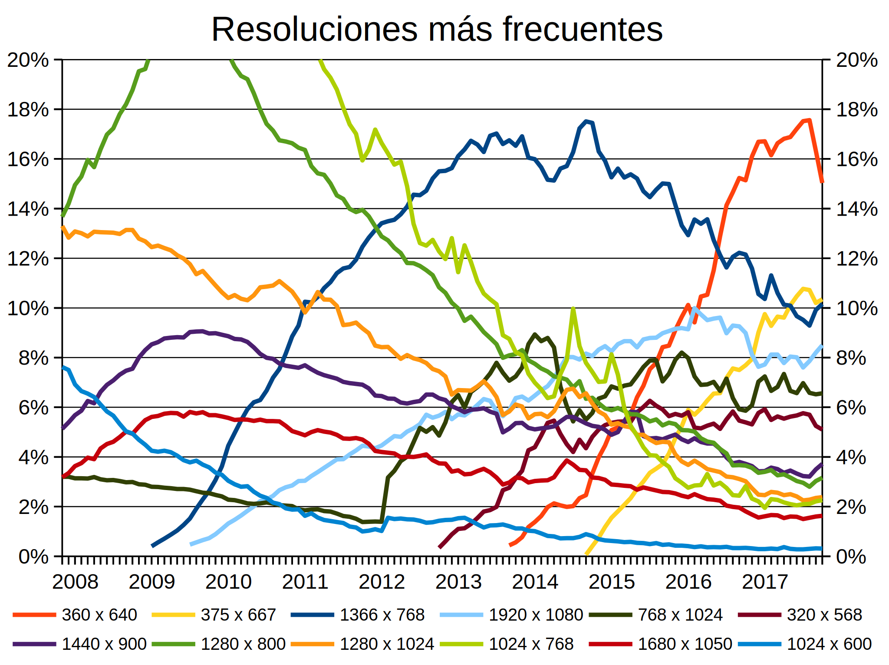
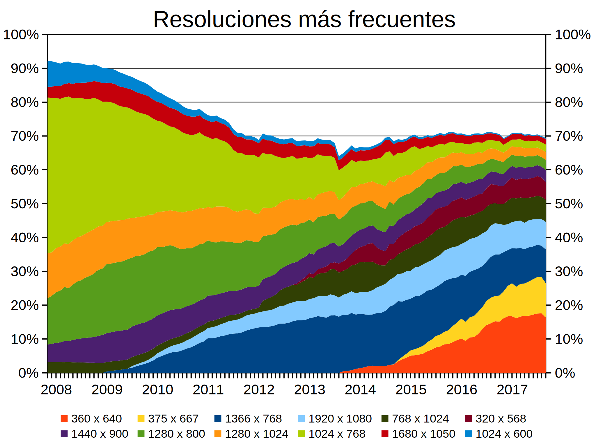
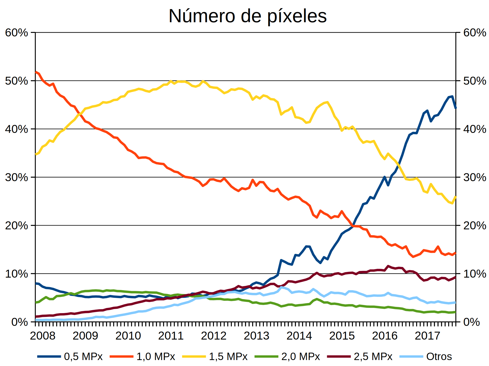
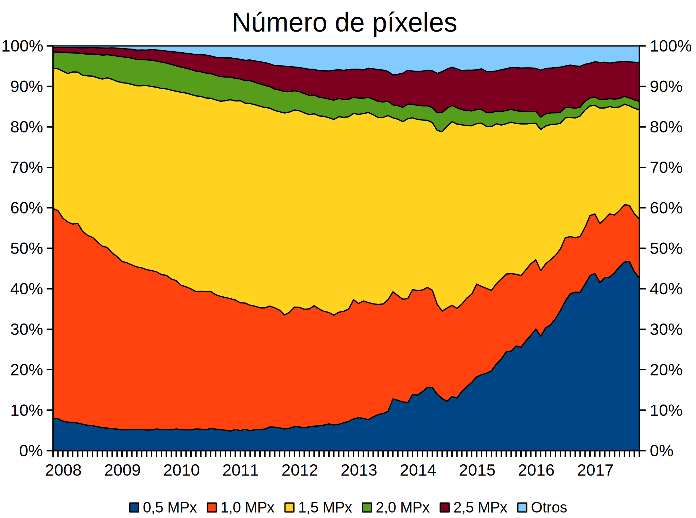
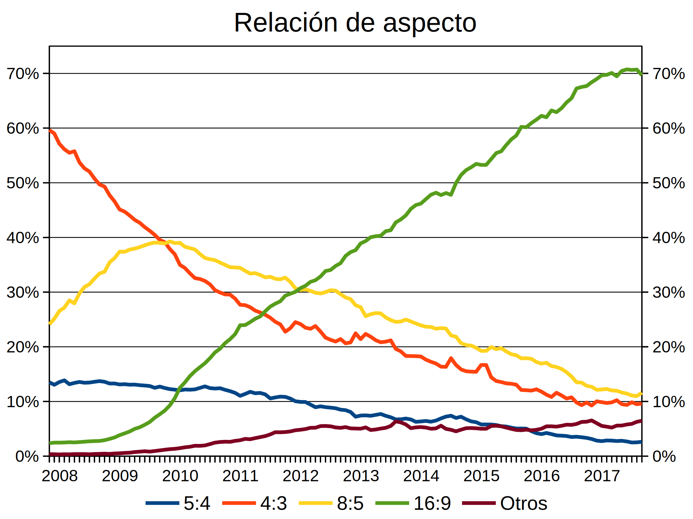
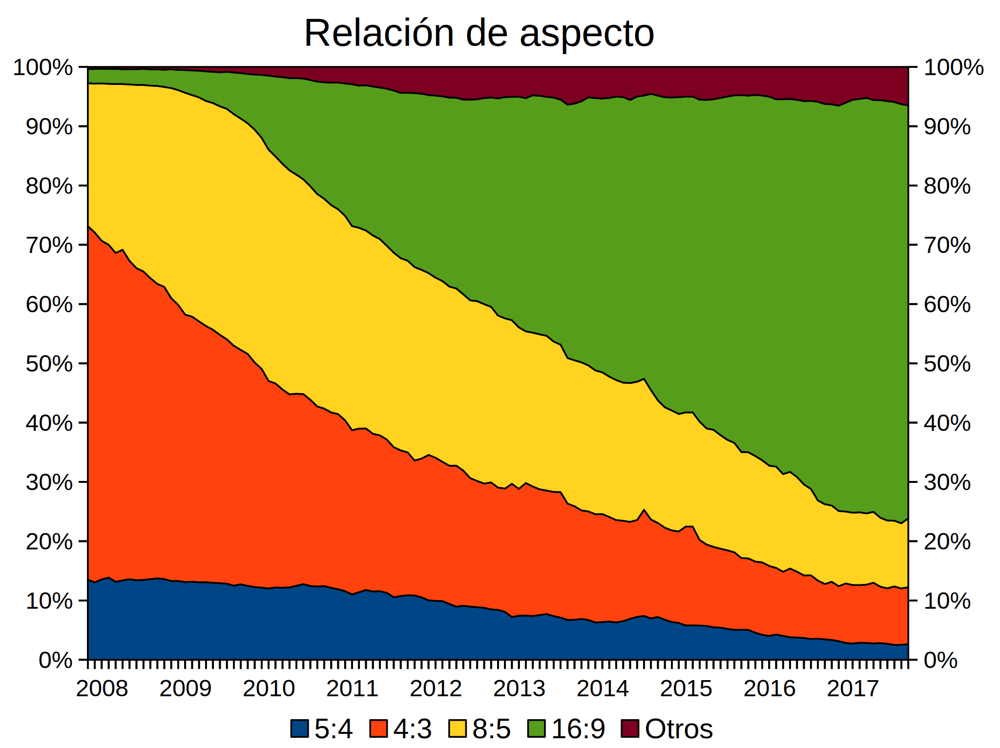

El mercado de sistema operativos, desde 2007
Los dos gráficos siguientes muestran los porcentajes de utilización de sistemas operativos desde finales de 2007 hasta la actualidad (basado en datos de la web Net Applications) de dos formas distintas: en forma de líneas o como áreas apiladas:


Este gráfico muestra detalles interesantes:
- Los sistemas operativos móviles (Android, iPhone, iPad, etc.) tienen un uso creciente. A finales de 2011 superaron a los sistemas Mac de escritorio y a Windows Vista, a finales de 2014 superaron a Windows XP y a mediados de 2016 se igualaron a Windows 7. Siempre han estado por encima de Windows 8/8.1/10.
- Los cambios de versiones de Windows se producen lentamente, probablemente porque los usuarios ya sólo cambian de sistema operativo cuando cambian de ordenador y esto ocurre cada vez menos a menudo.
- Windows XP fue el sistema operativo más utilizado hasta mediados de 2012 en que fue superado por Windows 7. Aunque su soporte oficial terminó en abril de 2014, siguió teniendo un uso significativo. A mediados de 2015 se emparejó con Windows 8 y se encamina a la irrelevancia.
- Windows Vista, el sistema operativo sucesor de Windows XP, fue un fracaso comercial y nunca llegó a superar el 20% del mercado. Desde principios de 2013 se puede considerar irrelevante. En abril de 2017 terminó su soporte oficial y desde mediados de 2017 se puede considerar desaparecido.
- Windows 7 tuvo mucho más éxito que Vista. Superó a Vista a mediados de 2010 y a XP a mediados de 2012. Lógicamente, su crecimiento se detuvo tras la publicación de Windows 8, a finales de 2012, pero tras el fin del soporte de Windows XP en abril de 2014 su uso aumentó hasta casi el 50%. Tras la publicación de Windows 10 en julio de 2015, su uso se ha ido reduciendo. pero parece que cuando se termine su soporte en enero de 2020 su uso seguirá siendo significativo, como le pasó a Windows XP.
- Windows 8 y Windows 8.1, que en las gráficas se muestran agrupados, se publicaron a finales de 2012 y en octubre de 2013, respectivamente. Su implantación fue un fracaso aún mayor que Vista, probablemente debido tanto a su interfaz como al crecimiento de los dispositivos móviles con Android e iOS. En dos o tres años puede ser irrelevante y, en cualquier caso, seguramente habrá desaparecido mucho antes de que se acabe su soporte, en enero de 2023.
- Windows 10, publicado en julio de 2015, tuvo un arranque fulgurante que se ralentizó enseguida. Su implantación ha sido mejor que la de Vista o Windows 8, pero peor que la de Windows 7.
- Los sistema operativos Mac de escritorio han aumentado ligeramente su cuota de mercado, aunque manteniéndose en niveles muy inferiores a Windows.
- Los sistema operativos libres de escritorio (GNU/Linux y BSD) tienen un uso residual y estabilizado ligeramente por encima del 1%.
El predominio de Windows en los PCs de escritorio y portátiles dió siempre al navegador Internet Explorer una ventaja fundamental, ya que Internet Explorer venía incluido de serie en Windows y cada ordenador que se vendía era un ordenador con Internet Explorer, salvo que el usuario tuviera la voluntad y capacidad de cambiar a otro navegador. Pero eso ya no es así. En parte porque los usuarios de ordenadores de escritorio parecen no conformarse ya con el navegador incluido en el sistema operativo, y por eso el uso del navegador Edge no crece como el uso de Windows 10. Pero sobre todo, porque el auge de los dispositivos móviles ha acabado con la posición de dominio de Microsoft en el mercado de sistemas operativos.
El mercado de pantallas, desde 2007
Los dos gráficos siguientes muestran las doce resoluciones de pantallas de ordenador más extendidas desde finales de 2007 hasta la actualidad (basado en datos de la web Net Applications) de dos formas distintas: en forma de líneas o como áreas apiladas:


Hasta 2013, la tendencia general era al aumento de las resoluciones más altas. Desde 2013, debido al crecimiento de los dispositivos móviles, la tendencia general es el aumento de las resoluciones más bajas y al descenso de las resoluciones más altas (excepto la resolución 1920x1080).
Otros detalles interesantes de estos gráficos:
- El mercado está cada vez más fragmentado: las cinco resoluciones más extendidas en 2007 superaban el 80% del mercado, mientras que ahora apenas superan el 50%.
- Las resoluciones de PCs de escritorio más extendidas son actualmente 1366x768 y 1920x1080, que cubren casi el 20% entre las dos.
- Las resoluciones de dispositivos móviles más extendidas son 360x640 y 375x667, que alcanzan casi el 30% entre las dos.
- La resolución más extendida de 2007 a 2011 fue la resolución de 1024x768, pero al ir reduciendo continuamente su cuota de mercado fue superada por la resolución de 1366x768 a mediados de 2012. Se está volviendo irrelevante.
- La segunda resolución más extendida de 2008 a 2011 fue 1280x800, que desde entonces también se está volviendo irrelevante.
- Entre 2012 y mediados de 2016, la resolución más extendida fue 1366x768, pero su uso está cayendo desde 2013.
- Desde mediados de 2016, la resolución más extendida es 360x640.
- Desde mediados de 2014 hasta principios de 2016, la segunda resolución más extendida fue 1920x1080.
- La gráfica incluye únicamente las doce resoluciones más extendidas desde 2008 hasta la actualidad y por eso no incluye nuevas resoluciones posteriores a 2015. Por ejemplo, la resolución 414x736 (aparecida en 2016, que no se muestra en el gráfico y que actualmente -noviembre de 2017- se acerca al 5%) sustituirá en el gráfico a la resolución 1680x1050 cuando supere el 5,8% que esta alcanzó en 2009.
Los dos gráficos siguientes muestran el número de píxeles total de las pantallas de ordenador (menos de medio millón de píxeles, entre medio millón y un millón, entre un millón y millón y medio de píxeles, etc.) desde finales de 2007 hasta la actualidad (basado en datos de la web Net Applications) de dos formas distintas: en forma de líneas o como áreas apiladas:


Este gráfico muestra detalles interesantes:
- Entre 2008 y 2011 la tendencia era al aumento del tamaño de las pantallas, sobre todo debido al aumento de las pantallas de 1,5 Mpx en detrimento de las pantallas de 1 Mpx.
- Desde 2012, debido al auge de los dispositivos móviles, las pantallas más pequeñas (0,5 Mpx o menos) crecen a costa de las demás, y desde mediados de 2016 son las más extendidas.
- Hasta 2015 las pantallas de 2,5 MPx y superiores fueron creciendo lentamente, pero desde entonces se mantienen estables en un 10% del mercado.
Los dos gráficos siguientes muestran la relación de aspecto (la proporción entre la resolución horizontal y la vertical) de las pantallas de ordenador desde finales de 2007 hasta la actualidad (basado en datos de la web Net Applications) de dos formas distintas: en forma de líneas o como áreas apiladas:


Este gráfico muestra detalles interesantes:
- Las pantallas más cuadradas (5:4) han sido siempre las menos extendidas y su uso se va reduciendo lentamente.
- Las pantallas 4:3, que fueron las más extendidas hasta mediados de 2009, han ido reduciendo su uso a la sexta parte.
- Las pantallas 8:5 crecieron hasta 2009 y fueron las más extendidas en 2010 y 2011, pero su uso se ha reducido a menos de la tercera parte desde entonces.
- Las pantallas 16:9 crecieron regularmente casi un 10% cada año desde 2009 hasta 2016. Desde finales de 2011 son las más extendidas y a mediados de 2014 superaron el 50% del mercado.